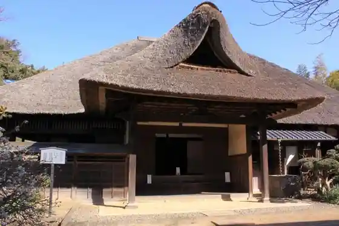
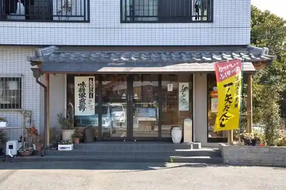

Kirimbiiru Toride Kojo
Toride, Ibaraki · 0297-72-8300 · Official / source link
Ajia Toride Kantorii Kurabu
Toride, Ibaraki · 0297-72-0727 · Official / source link
Toride Yado Honjin (Someno Ie)
Toride, Ibaraki · 0297-74-2141 · Official / source link

Cho Zendera Sansei Do
Toride, Ibaraki · 0297-73-2010 · Official / source link
Shiina Beika
Toride, Ibaraki · 0297-85-8460 · Official / source link

Kobori no Watashi (Ohori no Watashi)
Toride, Ibaraki · 0297-74-2141 · Official / source link
Soba Tokoro Kosho Iori
Toride, Ibaraki · 0297-74-5994 · Official / source link
Toride Keirinjo
Toride, Ibaraki · 0297-74-1111 · Official / source link
Tozen Tera Kannon Do Yamato
Toride, Ibaraki · 0297-73-2010 · Official / source link
Toride Maizo Bunkazai Center
Toride, Ibaraki · 0297‐73‐2010 · Official / source link
Tanaka Shuzo Mise
Toride, Ibaraki · 0297-72-0011 · Official / source link
Honda Sakuzaemon Shigetsugu no Haka
Toride, Ibaraki · 0297-73-2010 · Official / source link
Toride Atogyararii ” Kirari ”
Toride, Ibaraki · 0297-77-1161 · Official / source link
Hakusan Kakurembo
Toride, Ibaraki · 0297-77-7037 · Official / source link
Tsukemono Sanchu Ya
Toride, Ibaraki · 0297-74-1600 · Official / source link